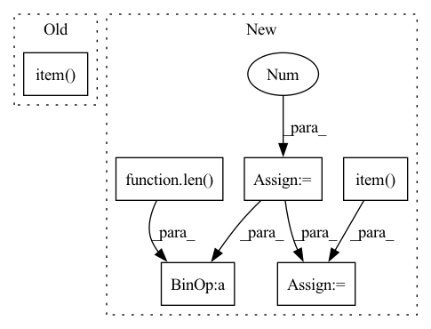

Pattern ID :24918

Before Change
//con_ls = 0
img_con_loss += img_con_ls.item()
txt_con_loss += txt_con_ls.item()
bce_loss += bce_ls.item()
//con_loss += 0
ce_loss += ce_ls.item()
loss = ce_ls + self.img_con_loss_weight * img_con_ls + self.txt_con_loss_weight * txt_con_ls \
+ self.bce_loss_weight * bce_ls
After Change
img_con_loss = 0
txt_con_loss = 0
img_bce_loss = 0
txt_bce_loss = 0
self.model.train()
for batch_idx, (images_id, images, reports_ids, reports_masks, labels) in enumerate(self.train_dataloader):
images, reports_ids, reports_masks, labels = images.to(self.device), reports_ids.to(self.device), \
reports_masks.to(self.device), labels.to(self.device)
output, img_con_ls, txt_con_ls, img_cls, txt_cls = self.model(images, reports_ids, labels=labels, mode="train")
img_bce_ls = self.bce_loss(img_cls, labels)
txt_bce_ls = self.bce_loss(txt_cls, labels)
ce_ls = self.criterion(output, reports_ids, reports_masks)
//print("222", con_ls, con_ls.shape)
//if self.n_gpu > 1:
img_con_ls = img_con_ls.mean()
txt_con_ls = txt_con_ls.mean()
//con_ls = contrastive_loss(memory_matrix, labels)
//con_ls = 0
img_con_loss += img_con_ls.item()
txt_con_loss += txt_con_ls.item()
img_bce_loss += img_bce_ls.item()
txt_bce_loss += txt_bce_ls.item()
//con_loss += 0
ce_loss += ce_ls.item()
loss = ce_ls + self.img_con_loss_weight * img_con_ls + self.txt_con_loss_weight * txt_con_ls \
+ self.img_bce_loss_weight * img_bce_ls + self.txt_bce_loss_weight * txt_bce_ls
self.optimizer.zero_grad()
loss.backward()
self.optimizer.step()
if batch_idx % self.args.log_period == 0:
self.logger.info("[{}/{}] Step: {}/{}, CE Ls: {:.5f}, CON Ls1: {:.5f}, CON Ls2: "
"{:.5f}, BCE Ls1: {:.5f}, BCE Ls2: {:.5f}."
.format(epoch, self.epochs, batch_idx, len(self.train_dataloader),
ce_loss / (batch_idx + 1), img_con_loss / (batch_idx + 1),
txt_con_loss / (batch_idx + 1), img_bce_loss / (batch_idx + 1),
txt_bce_ls / (batch_idx + 1)))
log = {"ce_loss": ce_loss / len(self.train_dataloader), "img_con": img_con_loss / len(self.train_dataloader),
"txt_con": txt_con_loss / len(self.train_dataloader),
"img_bce_loss": img_bce_loss / len(self.train_dataloader), "txt_bce_loss": txt_bce_loss / len(self.train_dataloader)}
self.logger.info("[{}/{}] Start to evaluate in the validation set.".format(epoch, self.epochs))
self.model.eval()
In pattern: SUPERPATTERN
Frequency: 3
Non-data size: 6
Instances
Fragment ID: 76738818
Project Name: markin-wang/xpronet
Commit Name: 7e73abbd1521bcebbad9e3935b0f490cb4f59f6f
Time: 2021-11-27
Author: cserwj@gmail.com
File Name: modules/trainer.py
M Class Name: Trainer
N Class Name: Trainer
M Method Name: _train_epoch(2)
N Method Name: _train_epoch(2)
M Parent Class: BaseTrainer
N Parent Class: BaseTrainer
M File Name: modules/trainer.py
N File Name: modules/trainer.py
M Start Line: 190
M End Line: 212
N Start Line: 191
N End Line: 230
'>
Before Change
loss_agg += loss_abs.item()
loss_bbox_agg += loss_dict["bbox"].item()
loss_giou_agg += loss_dict["giou"].item()
loss_cls_agg += loss_dict["cls"].item()
loss = loss_agg / len(self._val_loader)
loss_bbox = loss_bbox_agg / len(self._val_loader)
After Change
loss_bbox_agg = 0
loss_cls_agg = 0
loss_seg_ce_agg = 0
loss_seg_dice_agg = 0
for data, mask, bboxes, seg_mask in tqdm(self._val_loader):
// Put data to gpu
data, mask = data.to(device=self._device), mask.to(device=self._device)
targets = defaultdict(list)
for item in bboxes:
targets["target_boxes"].append(item[0].to(dtype=torch.float, device=self._device))
targets["target_classes"].append(item[1].to(device=self._device))
targets["target_seg"] = seg_mask.squeeze().to(device=self._device)
// Make prediction
losses, predictions = self._model.train_step(data, targets, evaluation=True)
loss_abs = sum(losses.values())
loss_agg += loss_abs.item()
loss_bbox_agg += losses["reg"].item()
loss_cls_agg += losses["cls"].item()
loss_seg_ce_agg += losses["seg_ce"].item()
loss_seg_dice_agg += losses["seg_dice"].item()
// Evaluate validation predictions based on metric
// pred_boxes, pred_classes, pred_scores = inference(predictions)
self._evaluator.add(
pred_boxes=[boxes.detach().cpu().numpy() for boxes in predictions["pred_boxes"]],
pred_classes=[classes.detach().cpu().numpy() for classes in predictions["pred_labels"]],
pred_scores=[scores.detach().cpu().numpy() for scores in predictions["pred_scores"]],
gt_boxes=[gt_boxes.detach().cpu().numpy() for gt_boxes in targets["target_boxes"]],
gt_classes=[gt_classes.detach().cpu().numpy() for gt_classes in targets["target_classes"]],
)
loss = loss_agg / len(self._val_loader)
loss_bbox = loss_bbox_agg / len(self._val_loader)
loss_cls = loss_cls_agg / len(self._val_loader)
loss_seg_ce = loss_seg_ce_agg / len(self._val_loader)
loss_seg_dice = loss_seg_dice_agg / len(self._val_loader)
metric_scores = self._evaluator.eval()
self._evaluator.reset()
'>
Fragment ID: 76738819
Project Name: bwittmann/transoar
Commit Name: 00768630087f32a1ba35dda71dc4f1823d45499c
Time: 2022-01-20
Author: bastian.wittmann@tum.de
File Name: transoar/trainer.py
M Class Name: Trainer
N Class Name: Trainer
M Method Name: _validate(2)
N Method Name: _validate(2)
M Parent Class:
N Parent Class:
M File Name: transoar/trainer.py
N File Name: transoar/trainer.py
M Start Line: 98
M End Line: 138
N Start Line: 100
N End Line: 140
'>
Before Change
else:
pass
if verbose:
print("Epoch ", epoch+1," | Current val accuracy: ", val_accuracy.item(), " | Best accuracy: ", best_acc.item())
return best_model
After Change
train_loss += loss.item()
acc = []
val_loss = 0.0
print("Validating...")
for idx, (X_val, y_val) in enumerate(self.val_loader):
loss, correct = self.eval(X_val, y_val)
val_loss += loss.item()
acc.append(correct)
val_accuracy = sum(acc)/len(acc)
if val_accuracy>=best_acc:
best_model = self.model
best_acc = val_accuracy
else:
pass
train_loss = train_loss / len(self.train_loader)
val_loss = val_loss / len(self.val_loader)
if verbose > 0:
print("Epoch:{epoch} |train loss: {train_loss} |val loss: {val_loss} |val accuracy: {cur_acc} |best accuracy: {best_acc}"\
.format(epoch=epoch+1,
train_loss=round(train_loss, 4),
'>
Fragment ID: 76738816
Project Name: tungedng2710/improved-arcface
Commit Name: 25873b8cad9b5abf876f2f63d7d6e3459fa6fbd5
Time: 2021-12-15
Author: tungnguyen99.tn@gmail.com
File Name: trainer.py
M Class Name: Trainer
N Class Name: Trainer
M Method Name: train(3)
N Method Name: train(3)
M Parent Class:
N Parent Class:
M File Name: trainer.py
N File Name: trainer.py
M Start Line: 42
M End Line: 69
N Start Line: 48
N End Line: 88